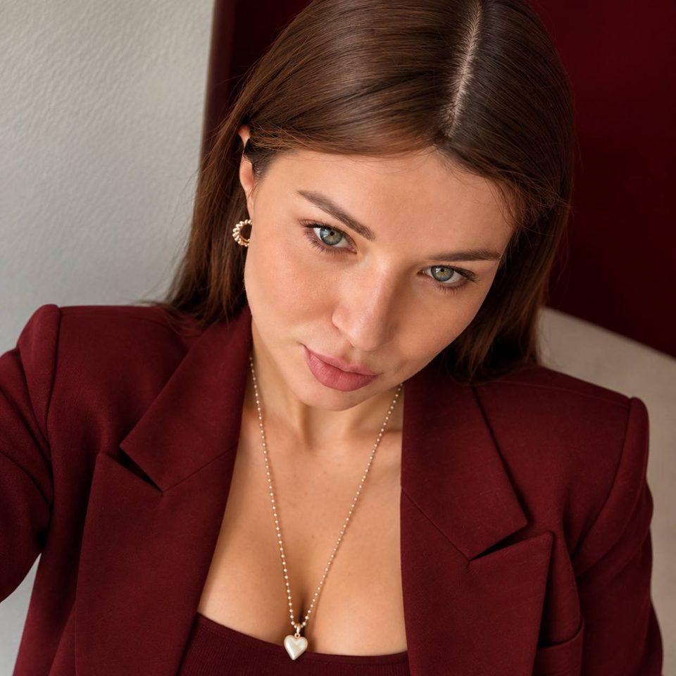

Старт
Разовая консультация
5 000 ₽
Чтобы понять, с чего начать.
- Диагностика по опросникам и анализам
- Персональный план на 2-4 недели
- Если продолжите в программе, стоимость засчитается
Разберемся, что нужно именно вашему организму, и выстроим питание, от которого не захочется сбежать через месяц.
Анастасия Де-Колядо, нутрициолог. Персональное сопровождение онлайн.

Со всем этим можно работать. Начнем с того, что разберемся в вашей ситуации.
Здоровье - лучшая инвестиция в качество собственной жизни.
Питание - основа здоровья. Это то, как вы живете каждый день, а не диета на месяц.
Я не даю меню и не исчезаю. Я иду рядом, пока новые привычки не станут вашими.
Быстрых результатов, которые потом откатываются, у меня не будет. Мы работаем минимум два месяца: за это время привычки успевают закрепиться и больше не держатся на силе воли.
Обсуждаем вашу цель, историю и то, что вы уже пробовали.
Опросники по питанию, пищеварению и образу жизни, визуальная оценка, ваши анализы в контексте питания.
Персональный план: питание, сон, привычки, среда дома.
Меняем по шагу, без резких запретов. Я на связи в чате, разбираю ваши тарелки, помогаю пройти срывы, праздники и поездки.
Контрольная диагностика: сравниваем, что изменилось, и решаем, куда двигаться дальше.
Разовая консультация
5 000 ₽
Чтобы понять, с чего начать.
2 месяца сопровождения
20 000 ₽
3 месяца сопровождения
40 000 ₽
Все из основной программы, плюс:
Если у вас есть заболевание и вы уже наблюдаетесь у врача, я с удовольствием возьму вас в работу.
Лечение остается за врачом. Я помогаю выстроить питание и привычки так, чтобы назначения работали лучше, а путь к результату был понятнее, спокойнее и устойчивее.
Анастасия Де-Колядо, дипломированный нутрициолог Международного института функциональной интегративной медицины (МИФИМ).
Я всю жизнь была склонна к полноте, хотя спортом занималась всегда. Перепробовала, кажется, все: яблоки с кефиром, йогурты с отрубями, кето. Последняя диета закончилась проблемами со здоровьем: загустела желчь, нарушился липидный обмен.
Тогда я впервые всерьез занялась своим здоровьем. Прошла полноценные чекапы, познакомилась с врачами интегративной медицины, сдала генетику и наконец поняла, как устроен мой метаболизм: как мне питаться, сколько двигаться и что поддерживать.
Итог - минус 10 кг и спокойная работа желчного и всего ЖКТ. Без камней, без голодовок и без возвращения к старому весу.
Генетика стала для меня точкой опоры: она показывает, что подходит именно вашему организму. Поэтому с клиентами я тоже работаю с генетическими особенностями, когда это помогает точнее выстроить питание.
Теперь я знаю, насколько питание и образ жизни влияют на здоровье и на то, как мы живем каждый день. И хочу, чтобы вокруг было больше людей, которые едят разнообразно, чувствуют себя хорошо и радуются жизни.
Напишите мне в Telegram - расскажу, какая программа подойдет именно вам.
Написать в Telegram